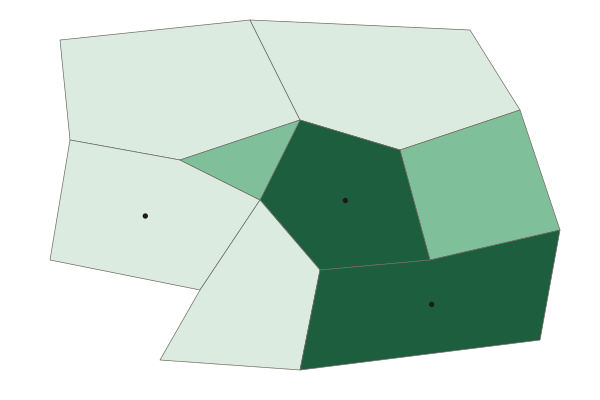

Unit 7 · 12 to 17% of the exam
Unit 7 practice test: Industrial and Economic Development Patterns and Processes
twelve questions, every option explained
12 exam-style questions from the unit, free, with an explanation for every option. Each has four answer choices (the real exam and the practice exams have five), and sets share one map, table, chart, image or passage. None of them is in the two practice exams. Covers: The Industrial Revolution; Economic Sectors and Patterns; Measures of Development; Women and Economic Development; Theories of Development; Trade and the World Economy; Changes as a Result of the World Economy; Sustainable Development.

Data
Human Development Index for five countries
| Country | HDI (2023 data) | World Bank FY27 income group |
|---|---|---|
| Iceland | 0.972 | High income |
| Norway | 0.970 | High income |
| Switzerland | 0.970 | High income |
| United States | 0.938 | High income |
| South Sudan | 0.388 | Low income |
Source: UNDP Human Development Report 2025 (2023 data); World Bank FY27 income groups (July 2026).
1. Which statement best describes what the table shows?
- High-income ones top 0.9; South Sudan is under 0.4
- The five are about equal
- South Sudan has the highest HDI because it has the lowest income
- The United States has the highest HDI of the five countries listed
Show the answer
Read the values: the four high-income countries are between 0.938 and 0.972, while South Sudan is 0.388.
- Correct: High-income ones top 0.9; South Sudan is under 0.4: Right: it names the pattern and the size of the gap, with values.
- The five are about equal: The values run from 0.388 to 0.972, a very wide gap.
- South Sudan has the highest HDI because it has the lowest income: South Sudan has the lowest HDI and is low income.
- The United States has the highest HDI of the five countries listed: Iceland is highest (0.972); the United States is lowest of the four high-income countries.
2. Norway and Switzerland both have an HDI of 0.970 in this table. What is the best conclusion?
- Their people have identical incomes, health and schooling
- One of the two values is likely a printing error
- Ranks shift by report; compare within one edition
- The HDI is unable to compare these two countries in any way
Show the answer
A composite index can tie, and its values are revised with each report, so ranks are compared only within one edition and never treated as fixed.
- Their people have identical incomes, health and schooling: Different mixes of the three dimensions can give the same composite value.
- One of the two values is likely a printing error: Ties happen in composite indices; nothing suggests an error.
- Correct: Ranks shift by report; compare within one edition: Right: HDI is revised each report and back years are recalculated, so ties and ranks shift.
- The HDI is unable to compare these two countries in any way: It can compare them within one edition; it simply shows them as tied.
3. Which question could this table NOT answer?
- Which country had the lowest HDI in the 2023 data?
- Does human development differ by US region?
- Which of these countries are in the World Bank's FY27 high-income group?
- Is Iceland's HDI higher than that of the United States?
Show the answer
The data are at the national scale: one value per country. They cannot show patterns at the local (subnational) scale inside a country.
- Which country had the lowest HDI in the 2023 data?: The table answers this: South Sudan (0.388).
- Correct: Does human development differ by US region?: Right: the table gives one national value per country, so it cannot show differences inside a country.
- Which of these countries are in the World Bank's FY27 high-income group?: The table answers this in its last column.
- Is Iceland's HDI higher than that of the United States?: The table answers this: 0.972 compared with 0.938.
Map
Head offices of large firms in Country A, by province

Head offices of large firms per million people (invented)
- Under 2
- 2 to 9
- 10 or more
4. At what scale of analysis are the data on this map?
- Global
- Local (subnational), by province
- National, one value for the country
- Regional, across several countries
Show the answer
The scale of analysis is the scale of the data: one value for each province inside Country A, so subnational.
- Global: The map shows one country, not the world.
- Correct: Local (subnational), by province: Right: the data are for provinces inside one country, a subnational scale.
- National, one value for the country: Each province has its own value, so the data are below the national scale.
- Regional, across several countries: Only one country is shown.
5. Which statement describes the pattern on the map?
- Head offices are spread evenly across Country A
- Head offices are densest in the Western Uplands
- They cluster in the capital and South Coast
- Head offices are densest in the far north
Show the answer
A strong pattern says where: the top class is the Capital Region and South Coast, and the lowest is the north, west and south.
- Head offices are spread evenly across Country A: The classes range from under 2 to 10 or more, so the spread is uneven.
- Head offices are densest in the Western Uplands: The Western Uplands are in the lowest class.
- Correct: They cluster in the capital and South Coast: Right: those two provinces are in the top class; the north, west and south are in the lowest.
- Head offices are densest in the far north: The northern provinces are in the lowest class.
6. How does the map show that world system theory can apply at more than one scale?
- One country has a core-like center and periphery-like edge
- The map proves Country A is a core country
- Each province is in the semiperiphery
- World system theory works at the global scale alone
Show the answer
The core, semiperiphery and periphery idea can be applied inside a country: a core-like center with decision work and a periphery-like edge.
- Correct: One country has a core-like center and periphery-like edge: Right: the Capital Region and South Coast hold the decision work, as a core does, while outer provinces look like a periphery.
- The map proves Country A is a core country: A map of one country's provinces cannot place the whole country in the world system.
- Each province is in the semiperiphery: The map shows clear differences between provinces, not one shared tier.
- World system theory works at the global scale alone: The point of the question is that the same pattern can appear inside a country.
7. What is one limitation of this map for judging development in the Western Uplands?
- It counts offices, not well-being
- It shows too few provinces
- It uses invented data, so it shows no pattern
- It is at the global scale, so provinces vanish
Show the answer
Head offices per million people measure where decisions are made, not how people live, so the map alone cannot judge development.
- Correct: It counts offices, not well-being: Right: one indicator of business decisions says little about people's overall well-being.
- It shows too few provinces: Eight provinces are enough to read a pattern.
- It uses invented data, so it shows no pattern: Invented data still show a pattern; the limit is what the measure counts.
- It is at the global scale, so provinces vanish: The map is subnational; each province is shown.
8. Britain industrialized in the late 1700s mainly through private mill owners. Japan began after 1868 with its government bringing in foreign machines and advisers. What does this difference show?
- Later places could industrialize by a state-led route
- Japan copied British laws and policies one by one
- Japanese industry started without machines or power
- Later industrializers had little need for raw materials
Show the answer
The ingredients stayed the same, but a later industrializer such as Japan used government planning to catch up quickly.
- Correct: Later places could industrialize by a state-led route: Right: the same mix of machines, power and resources arrived by a different route in a later place.
- Japan copied British laws and policies one by one: Japan adapted industry to its own goals rather than copying Britain law by law.
- Japanese industry started without machines or power: Japan imported machines and built power, the same ingredients Britain used.
- Later industrializers had little need for raw materials: Japan, too, needed raw materials such as coal and cotton.
9. Several aluminum smelters have been built in Iceland, which has plenty of hydroelectric and geothermal power but no bauxite (aluminum ore). What best explains this location?
- Smelting uses huge amounts of cheap electricity
- Iceland has the lowest wages in Europe, which draws factories
- Aluminum is weight-gaining, so it locates near its buyers in Iceland
- Iceland is a break-of-bulk point between Europe and Asia for most cargo
Show the answer
Least cost reasoning includes energy: an industry that uses vast amounts of electricity locates where power is cheap, here in Iceland.
- Correct: Smelting uses huge amounts of cheap electricity: Right: for an energy-hungry industry, power is the key input, so it pulls the smelter to the cheap energy.
- Iceland has the lowest wages in Europe, which draws factories: Wages in Iceland are high; cheap power, not cheap labor, is the draw.
- Aluminum is weight-gaining, so it locates near its buyers in Iceland: Iceland is a small market; the metal is exported.
- Iceland is a break-of-bulk point between Europe and Asia for most cargo: The draw is energy, not a role as a major transfer port.
10. What is the gender wage gap?
- The gap between women's and men's average pay
- The share of women who work in the informal sector
- The gap in years of schooling between girls and boys
- The number of women in a country's parliament
Show the answer
The gender wage gap compares the average pay of women and men.
- Correct: The gap between women's and men's average pay: Right: often shown as women's pay as a percent of men's.
- The share of women who work in the informal sector: That is a measure of informal work, not of pay differences.
- The gap in years of schooling between girls and boys: That is an education gap, part of the GII, not a pay gap.
- The number of women in a country's parliament: That measures political empowerment, not pay.
11. A country puts a 25% tariff on imported steel. Which outcome is most likely?
- Imports cost more, so home steelmakers sell more
- Imported steel gets cheaper, so imports rise
- Steel-selling countries remove their own tariffs
- Home steel prices fall as competition grows
Show the answer
A tariff is a tax on imports: imported steel costs more, which helps home steelmakers but raises costs for buyers and may bring tariffs in return.
- Correct: Imports cost more, so home steelmakers sell more: Right: the tariff raises import prices, which protects home producers, though buyers pay more.
- Imported steel gets cheaper, so imports rise: A tariff is a tax on imports, so it makes them cost more.
- Steel-selling countries remove their own tariffs: Other countries are more likely to answer with tariffs of their own.
- Home steel prices fall as competition grows: A tariff reduces foreign competition, so home prices tend to rise.
12. An invented study finds that every job at a new plant creates 1.5 more jobs in the region through the multiplier effect. The plant hires 2,000 workers. How many MORE jobs does the region gain beyond the plant's own? (Invented data for practice.)
Type a number. No calculator needed: work it out by hand, as on the exam.
Show the answer
Each plant job adds 1.5 jobs elsewhere: more jobs (5,000 in all, counting the plant).
- Answer: 3000